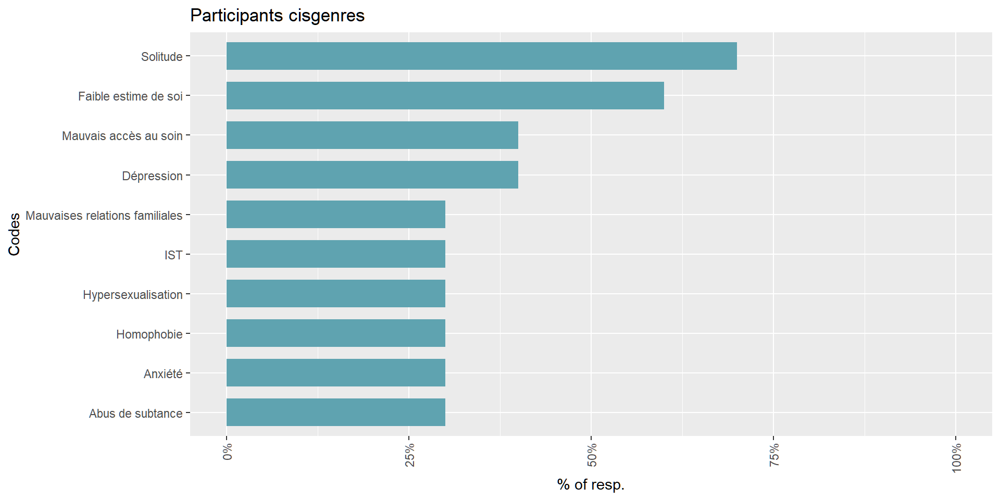
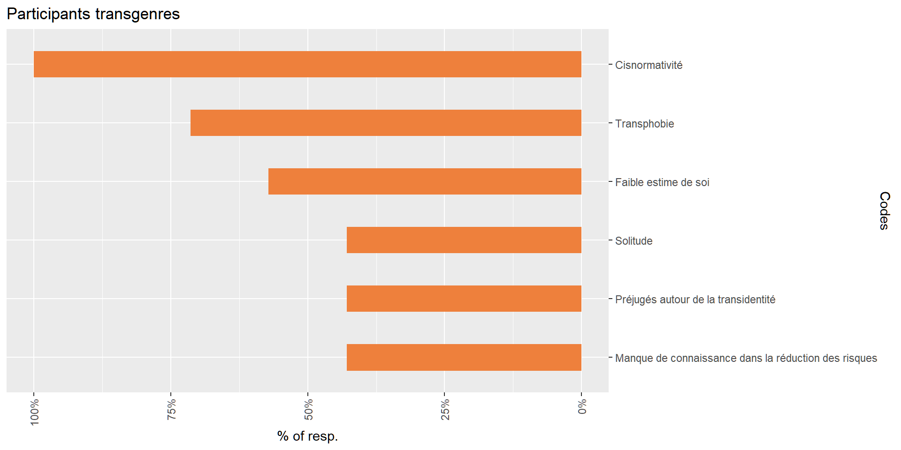

Trois questions principales étaient posées aux participants :
Ces questions étaient dédoublées de telle sorte à ce que les participants cisgenres répondent pour les HSH cisgenres tandis que les participants transgenres répondent pour les HSH transgenres.
En plus de ces trois questions, les répondants étaient invités à justifier leur choix avec une sous-question “Pourquoi pensez-vous que ces éléments sont les plus importants dans la vie des HSH ?”
Les réponses aux questions ouvertes ont été importées dans QualCoder3 pour les coder
Une analyse inductive des réponses a permis de mettre au point un guide de codage pour l’analyse thématique de contenu
Une première version du guide de codage mettait en évidence des thèmes qui recoupaient les questions ouvertes (“Santé mentale”, “Santé physique”, “Bien-être social”).
Cette première classification des thèmes a été par la suite revue pour deux raisons :
Les réponses mélangeaient les composantes sociales, psychologiques et physiques
Certains thèmes et sous-thèmes ne pouvaient s’inscrire dans une démarcation stricte des composantes bio-psycho-sociales
5 thèmes principaux ont été identifiés après analyse :
Affronter des difficultés au niveau de la santé mentale
Naviguer à travers des dynamiques intra-communautaires délétères
Survivre dans une société normative
Être exposé à des désavantages socio-économiques
Affronter des difficultés au niveau de la santé sexuelle
Ces thèmes sont divisés en 8 sous-thèmes :
Un diagramme en rayons de soleil permet de mieux visualiser cette hiérarchie de thèmes et de sous-thèmes. Il permet également de comparer les thèmes évoqués par les participants cisgenres et transgenres.
Les thèmes les plus fréquents des participants transgenres portaient sur les difficultés à survivre dans une société normative. Les répondants cisgenres, de leur côté, évoquaient plus fréquemment des thèmes en lien avec leur santé mentale.
En regardant un peu plus dans le détail, on remarque que la solitude, la faible estime de soi, le mauvais accès au soin, ainsi que la dépression étaient les 4 thèmes les plus fréquents des répondants cisgenres. La totalité des répondants transgenres, de leur côté, évoqué des difficultés liées à la cisnormativité de la société et près des 3/4 ont mentionné la transphobie. Les questions d’estime de soi et de solitude n’étaient mentionnées qu’après, mais il est important de noter que l’estime de soi était mentionnée dans une même proportion pour les répondants cisgenres et transgenres.


L’impact de la solitude sur la vie des HSH était palpable dans les réponses des experts cisgenres et transgenres.
Les répondants cisgenres indiquaient en outre que cette solitude tendait à s’accroître en vieillissant et devenait encore plus marquée chez les seniors HSH, en lien avec l’âgisme qu’ils subissent et le désintérêt pour les thématiques de santé qui les concernent, tel que le vieillissement en tant que PVVIH 1.
Les parcours migratoires des HSH renforçaient également cette solitude, notamment à travers un isolement progressif des HSH migrants qui, à force d’expériences négatives dans leurs parcours, de leur pays d’origine à l’arrivée en Belgique, s’éloignaient progressivement des autres.
Ce lien entre stress minoritaire et solitude, et plus particulièrement entre anticipation d’évènements négatifs et isolement, était également explicité dans les réponses d’un expert transgenre, dans un contexte de transphobie et de cisnormativité.
La dissimulation de l’identité, plus présente dans les réponses des experts cisgenres, constituait un autre facteur de stress minoritaire qui contribuait à l’isolement des HSH.
En outre, plusieurs experts ont évoqué les liens bidirectionnels entre la solitude et une plus faible confiance en soi, pointant du doigt les possibilités d’agir sur l’estime de soi en brisant la solitude.
Les pressions normatives étaient tout particulièrement évoquées par les experts transgenres, la totalité d’entre eux ayant évoqué l’impact de la cisnormativité dans leur vie ainsi que dans celles de leurs usagers.
Ces pressions cisnormatives concernaient surtout l’apparence physique ainsi que l’anatomie. Elles étaient liées à des situations de rejet, à la fois dans la société, mais également avec des partenaires romantiques ou sexuels cisgenres. L’habitude de la déception suscitée par ces rejets répétés était liée à une plus faible estime de soi ainsi qu’à des risques de relations abusives.
Par ailleurs, la cisnormativité était également liée à un manque d’accès au soin dû à un manque d’ouverture d’esprit des médecins sur la diversité des corps masculins. Cela entraînait également des freins au dépistage des ISTs, les campagnes de prévention ainsi que les pratiques de dépistage étant décrites comme cisnormées.
Ces éléments rejoignaient l’expérience de l’hétéronormativité décrite par les HSH cisgenres, qui y voyaient aussi un facteur de moindre accès au soin en raison d’un manque d’ouverture sur la diversité des orientations sexuelles.
Les pressions patriarcales sur la masculinité concernaient à la fois les hommes cisgenres et transgenres. Elles venaient s’immiscer dans les dynamiques sociales intracommunautaires, en instaurant un climat de compétitivité ainsi qu’en imposant des diktats sur l’apparence physique et la jeunesse.
Par ailleurs, un des participant questionnait le lien entre ces pressions patriarcales et une négligence de sa propre santé mentale.
Trois formes de discrimination ont été mises en avant dans les réponses : l’homophobie, la transphobie, et l’âgisme. Ces discriminations s’inscrivaient tout particulièrement dans le cadre familial et dans l’environnement social plus élargi.
Chez les migrants HSH, cette homophobie était présente à la fois dans le pays d’origine ainsi que dans les centres d’accueil, ce qui pouvait rendre le parcours migratoire dangereux et difficile.
Par ailleurs, les HSH transgenres relevaient l’intersectionalité de leur positionnement social, qui les expose à la fois à la transphobie et à l’homophobie. Transphobie qui impactait également leur santé mentale en pouvant accroître le sentiment de dysphorie.
Ces discriminations pouvaient se manifester par de la violence et des micro-agressions, notamment au sein du foyer familial.
Le manque de connaissance sur des thématiques spécifiques aux HSH était un élément transversal touchant à la fois les pratiques sexuelles et la consommation de produits.
Les experts cisgenres signalaient plus particulièrement un manque de connaissance sur la réduction des risques en matière de consommation de substance et de chemsex. Les experts transgenres évoquaient plutôt un manque de connaissance et d’accès à des informations trans-spécifiques sur l’impact du THAG 1 sur le risque d’acquisition d’IST.
Le faible accès au soin des HSH était directement lié aux thèmes de pressions normatives et de manque de formatin. Il recoupait 3 composantes principales :
Un manque de service pour les PVVIH âgés, notamment pour aborder les questions de comorbidités du VIH et leur impact sur le vieillissement
Un manque d’accès à la PrEP pour les HSH migrants
Un manque d’accès à des médecins informés et respectueux
Le manque de confiance en soi était un des points les plus fréquemment cités, à la fois par les participants cisgenres et transgenres. Outre le lien susmentionné avec la solitude, ce manque d’estime de soi était lié chez les participants transgenres à une relation ambivalente avec les HSH cisgenres.
D’une part, un des participants indiquait un besoin des hommes transgenres de voir leur masculinité validée à travers des rapports avec d’autres hommes. Le revers de cela étant, selon un autre participant, que le manque de légitimité que peuvent ressentir les hommes transgenres pouvaient les pousser à éviter d’avoir des relations avec des hommes cisgenres, de peur de ne pas être reconnus comme des hommes à part entière. Par ailleurs, la dysphorie de certains hommes transgenres pouvait être majorée au travers de rapports sexuels avec des hommes cisgenres.
En outre, des questions déplacées, une focalisation sur le génital, et des rejets de la part des HSH cisgenres était évoqués par plusieurs participants transgenres.
Ce manque de confiance en soi avait pour conséquence, chez les hommes cisgenres et transgenres, un manque d’assertivité qui pouvait les empêcher de formuler leurs limites, entraînant des pratiques sexuelles à risque.
Verbatim d’un des experts
[…] Si l’autre ne veut pas de préservatif, on va peut-être se plier à son exigence par peur du conflit, par peur d’exprimer son opposition. On a aussi moins conscience de nos corps, on y prête moins attention : si ma vie n’est pas importante, je ne vais pas me préoccuper de ma santé physique.
Au niveau des manifestations internes du mal-être, divers éléments ont été cités par les répondants :
Anxiété
Dépression
PTSD, notamment dans les parcours migratoires
Burnout
Instabilité émotionnelle
Difficultés cognitives, en lien avec un environnement carencé et un décrochage scolaire suite à des expériences négatives
Les répondants transgenres ont également évoqués la dysphorie, intensifiée par la transphobie et pouvant mener à de l’anxiété ou à de la dépression, tout en citant moins de difficultés psychiques différentes que les experts cisgenres.
Les répondants cisgenres évoquaient en outre des manifestations externes de ce mal-être interne, tel que l’usage, voire l’abus, de substance comme mécanisme de coping.
Plusieurs éléments concourraient à l’établissement de dynamiques de pouvoir déséquilibrées : des dynamiques de pouvoir héritées de l’hétéronormativité, le manque d’estime de soi de certains hommes transgenres qui pouvaient se retrouver subordonnés à un partenaire cisgenre qui se montrait plus ouvert que les précédents, et des disparités d’âge entre les partenaires.
Les pressions patriarcales sur la masculinité induisait également des dynamiques de compétition et de pouvoir qui pouvaient être rebutantes pour certains HSH.
Ces différents éléments avaient pour conséquences une difficulté pour certains HSH à se vivre en communauté et à établir des relations saines entre-eux, qu’elles soient amicales, romantiques, ou sexuelles.
L’hypersexualisation évoquée par les experts du Delphi concernait à la fois les préjugés externes sur la vie sexuelle débridée des HSH, mais également des pressions internes de se conformer à ce stéréotype.
Cette hypersexualisation était liée aux pressions patriarcales sur la masculinité, avec une vision des hommes comme étant naturellement davantage intéressés par le sexe, phénomène qui serait encore amplifié en contexte HSH.
En outre, un répondant transgenres liait cisnormativité et hypersexualisation en pointant du doigt que la vision hypersexualisée des HSH évoquait une imagerie cisnormative où le sexe entre hommes est implicitement lu comme impliquant la possession et l’usage de pénis.
Au niveau de la santé sexuelle, les réponses tournaient autour des ISTs, y compris le VIH, ainsi que sur leurs conséquences : comorbidités et vieillissement avec le VIH ainsi que cancers liés au HPV1.
Au niveau socio-économique, les différents éléments évoqués étaient la précarité, les difficultés à trouver un emploi à cause de la transphobie des employeurs, le décrochage scolaire, à cause d’un environnement social défavorable, ainsi que les difficultés liées aux parcours migratoires.
Syndelphi - Résultats du premier tour